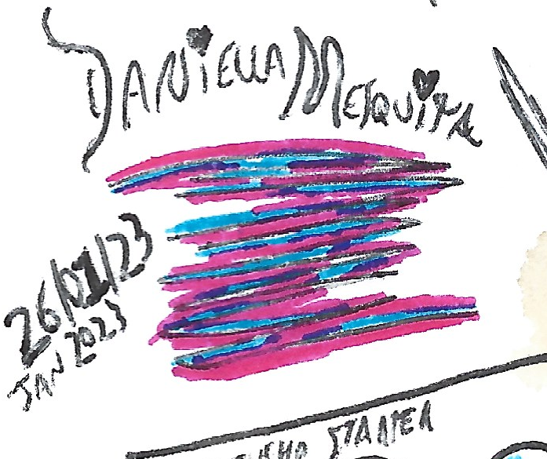

- Instead of being nice, be kind
- Low focus/organization, but high creativity
- Lateral thinker: generalist instead of specialist
- Newbie in programming languages, experienced programmer in visual event-sheets
- The noobs/beginners and the lighthearted always wins
- So open mind, that understands why there is the right and the wrong (believing in the moral relativity is what the narcisistic do
- Loves to drink
- Loves infographics
- Texts are so good as videos
My diverse creativity is used for what I like: creating things that can be usefull for the humanity.
I work every time creating very different things. I created since a simple music to a complex operating system. The different things I create, surprisingly, can have no relating to each other. I can't get focused in a single project for more than 4 days: I move to a new and totally different project. I'm better giving ideas to projects than working in it. I start my projects as virtual notes or draws in paper. I turn they into reality using a browser to design structure, and Construct game engine to program. I like to create things, and I'm pleasured because people can be happy using these stuff.
My name is Daniell Mesquita. I born in April 9, 1997, as Daniell Wilson José Mesquita. Since when a very little kid I create things. My first was a whale character called PRB (in 2013 inspired the phonemon Dewhale).
Also when a kid I started thinking in a store selling terrariums and bugs, and I put a businness board in front of our house and created the design of a ant food. Some neighbors laughed and called me "crazy". In the same epoch I thinked in creating a mini city for other kids, and I created a cardboard computer, operated by human using papers in the "screen". Now I have more creativity than when I was a kid. Thinking in happy people and a very better world with a lot of ideas and high technology, putting the humankind above the money (I'm not talking money isn't important).

Related sites
Áurea Maria Mesquita


 My PGP keys
My PGP keys